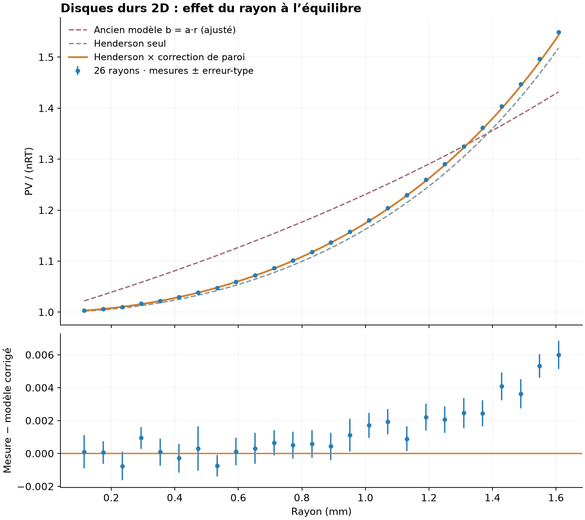

26 rayons de 0.115 à 1.608 mm, deux graines indépendantes par rayon, 1 000 particules, 300 K, 1 L, parois isolantes et piston fixe. Les mesures viennent du moteur du simulateur ; aucune pression n’est reconstruite à partir d’une équation d’état.

52 simulations et 426 blocs de mesure. À chaque rayon : au moins 60 unités internes (≈ 6,90 ms, plus de six temps de traversée typiques) écartées. Trois fenêtres de 20 unités consécutives doivent présenter un étalement de pression inférieur à 2 %, une anisotropie moyenne |Tx − Ty|/T inférieure à 3 %, et une occupation moyenne de chacun des quatre quarts de la cavité à moins de 2 points de 25 %. Ce contrôle pratique ne prouve pas mathématiquement l’équilibre.
Ensuite, au moins huit nouvelles fenêtres disjointes de 20 unités (≈ 2,30 ms, dix fois la fenêtre usuelle) par initialisation. Jusqu’à seize fenêtres si l’erreur-type par simulation dépasse 0,0015 sur Z. Tous les blocs retenus sont conservés, y compris leurs fluctuations. Chaque point final est la moyenne des deux initialisations. L’erreur-type affichée est le maximum de trois estimations : dispersion des blocs de 20 unités, des paires de blocs (40 unités), et des deux moyennes d’initialisation. Elle ne comprend pas les erreurs systématiques, et deux initialisations ne suffisent pas à certifier l’indépendance statistique.
Erreurs-types finales : 0.00065 à 0.00136 sur Z. Écart énergétique relatif maximal : 2.9e-15. La comparaison de la première et de la seconde moitié des mesures est disponible dans les blocs bruts ; les premières et dernières fenêtres peuvent encore fluctuer.
| Modèle | R² | Écart RMS sur Z | Écart relatif maximal |
|---|---|---|---|
| Ancien modèle b = a·r (a ajusté) | 0.880475 | 0.05603 | 7.567 % |
| Volume exclu b = 2V occupé | 0.993262 | 0.01330 | 2.987 % |
| Henderson (fluide homogène) | 0.991409 | 0.01502 | 2.008 % |
| Henderson × correction de paroi | 0.999813 | 0.00221 | 0.387 % |
Le coefficient de l’ancien modèle est réajusté sur la nouvelle série : a = 0.187575 L/mm. Les trois autres courbes n’ont aucun paramètre ajusté. R² = 1 − Σ(Zmes − Zmodèle)² / Σ(Zmes − moyenne)² : c’est un indicateur d’accord, pas une régression quand aucun paramètre n’est ajusté.
Pour des disques, φ = Nπr²/(LH). La formule de Henderson est ZH = (1 + φ²/8)/(1 − φ)², et commence par 1 + 2φ aux faibles densités. Le premier effet des collisions mutuelles varie donc comme r². Source : Henderson (1975) ; comparaison des équations par Santos et al. (1995).
Les centres ne peuvent pas s’approcher à moins de r d’une paroi : les longueurs accessibles sont L − 2r et H − 2r. Pour des centres indépendants, les forces moyennes sur les parois sont NkT/(L − 2r) et NkT/(H − 2r). En utilisant la même moyenne sur le périmètre physique que le simulateur, on obtient exactement Cparois = LH(L + H − 4r)/[(L − 2r)(H − 2r)(L + H)].
La courbe orange utilise Z ≈ Cparois × ZH(φ). La multiplication par ce facteur est une approximation géométrique proposée ici, pas une formule exacte du fluide en interaction et pas une conséquence démontrée de l’équation de Henderson. Elle donne un bon accord sur cette série. Les termes de surface liés aux interactions et les coins ne sont pas traités ; la précision ne doit pas être extrapolée à d’autres densités, nombres de particules ou géométries. La courbe Henderson seule reste visible pour distinguer les deux contributions.
Données agrégées CSV · Tous les blocs bruts JSON · Résumé et scores JSON · Figure SVG
Commandes : node scripts/radius-study.mjs, puis python scripts/radius-report.py (numpy et matplotlib). La collecte reprend les runs terminés. Le moteur reste inchangé, avec son pas maximal 1/240 et ses collisions élastiques exactes dans chaque segment.
SHA-256 de physics.js : 1424a1c3159dfe2a71857f60ba6ef5a7782c299e9e8fd9046021dcf7a16b1cd1.